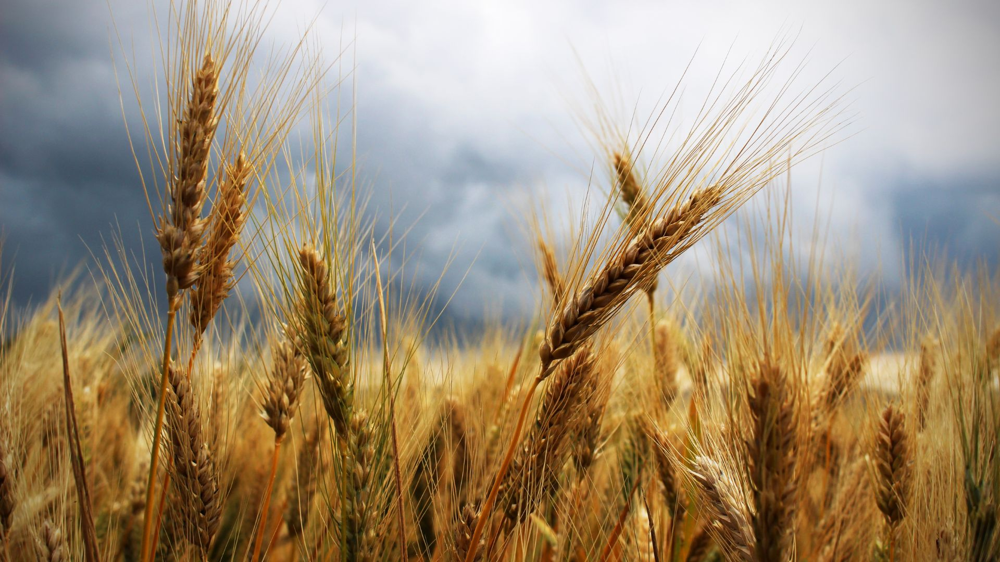

A Alma do Campo

O campo é a base de tudo, berço da vida e da alimentação, provendo recursos essenciais.
Da agricultura familiar à larga escala, a vida rural pulsa em harmonia com os ciclos naturais, fornecendo o que chega às nossas mesas.
Revoluções na Agricultura: Do Arado ao Robô
A história da agricultura é marcada por saltos tecnológicos que transformaram a produção de alimentos.
Agricultura de Precisão e o Robô Açaí
A colheita do açaí, um fruto vital para a economia e cultura da região amazônica, sempre foi uma tarefa árdua e perigosa para os coletores, que precisavam escalar palmeiras altas. O inovador Robô Açaí surge para transformar essa realidade, garantindo a segurança dos trabalhadores ao eliminar os riscos em altura.
Além da segurança, o robô otimiza a eficiência da colheita, assegurando que o açaí seja coletado no ponto ideal de maturação, o que melhora a qualidade do produto. Ele também reduz significativamente o desperdício e os danos à fruta. Este projeto é um exemplo claro de como a tecnologia urbana pode ser aplicada diretamente para resolver desafios do campo, criando soluções localizadas que beneficiam tanto os produtores rurais quanto os consumidores nas cidades.
 Robô Açaí: Inovação na colheita amazônica.
Robô Açaí: Inovação na colheita amazônica.
Robôs de Colheita de Frutas Delicadas
A colheita de frutas delicadas como o morango é um processo intensivo em mão de obra e exige grande cuidado para evitar danos. O Robô de Morango da Harvest Croo é uma solução inovadora que utiliza visão computacional e braços robóticos suaves para identificar, colher e embalar morangos maduros com precisão.
Essa tecnologia não só resolve o desafio da escassez de mão de obra, mas também reduz o desperdício de frutos e melhora a eficiência operacional. É um avanço crucial para a sustentabilidade e produtividade na fruticultura, conectando a inovação tecnológica da cidade diretamente às necessidades do campo.
Outras Inovações Essenciais
- Biotecnologia: Culturas resistentes a pragas.
- Sensores e IoT: Monitoramento de solo e clima.
- Drones e Satélites: Mapeamento e análise de áreas.
- IA e Big Data: Análise preditiva para otimizar a produção.
A Energia da Cidade
O Pulso da Cidade: Inovação e Oportunidades
A cidade é centro de inovação, cultura e oportunidades, com sua dinâmica acelerada.
É onde as demandas por alimentos e produtos do campo encontram tecnologia e pesquisa, impulsionando o progresso para ambos.
Pontes que Unem
Agricultura Familiar
Produção local alimenta a cidade, gerando renda.
Ecoturismo Rural
Experiências no campo promovem lazer e consciência.
Inovação Sustentável
Tecnologia urbana a serviço do campo.
Comunidade em Ação: Hortas Urbanas
No coração de São Paulo, a comunidade demonstra capacidade de resistir e transformar, cultivando alimentos e esperança. Uma festa de sustentabilidade e colaboração em espaços antes ociosos.
Cultivando o Futuro na Cidade
Mãos dedicadas redefinem paisagismo urbano e segurança alimentar. Transformam terrenos e escolas em centros de produção 100% orgânicos, fortalecendo renda e segurança alimentar.
Ver essa notícia incrível no site escolhas.org
A USP na Vanguarda da Agricultura Urbana
O Grupo de Estudos em Agricultura Urbana (GEAU) da USP destaca-se em soluções inovadoras. Desde 2016, o GEAU, integrado ao IEA, centraliza debates sobre Agricultura Urbana (AU) em São Paulo.
Coordenado pela Prof.ª Thais Mauad, o grupo promove uma visão holística. A "Horta da Faculdade de Medicina" (FMUSP), na laje, é exemplo prático de sustentabilidade, cultivada por professores, alunos, funcionários e voluntários.
Conheça o Projeto da USP no jornal.usp.br Horta da FMUSP: Produção orgânica no coração da cidade.
Horta da FMUSP: Produção orgânica no coração da cidade.
Iniciativa exemplar de sustentabilidade.
Impacto e Expansão da Agricultura Urbana da USP
A USP gera conhecimento e projetos concretos para a comunidade. O GEAU atua em pesquisas estratégicas, parcerias internacionais, educação (com a horta da FMUSP) e promoção de PANCs.
Essas iniciativas inspiram novas hortas, expandindo a rede no Brasil. A USP mostra como transformar espaços urbanos em centros de produção saudável e cidadania, fortalecendo a conexão campo-cidade.
Os Laços Invisíveis: Benefícios das Hortas
Hortas comunitárias cultivam conexões humanas e bem-estar psicológico. Pesquisa revela: Agradabilidade, Restauração e Pertencimento. Conexão com a natureza e interação social melhoram saúde física e mental, aliviando estresse.
Leia a Pesquisa Completa no scielo.brSobre o Projeto & Recursos Visuais
Informações do Projeto
- Autor: Igor Daniel Ferreira
- Localidade: Ortigueira, Paraná, Brasil
- Instituição: CEAM | Colégio Estadual Altair Mongruel
- Concurso: Agrinho 2025 - Tema "Festejando a conexão campo cidade"
- Ano: 2025
Este projeto foi desenvolvido por um estudante do Ensino Médio com o intuito de demonstrar a harmonia e interdependência entre os ambientes rural e urbano através de um site interativo e visualmente atraente.
Ferramentas Visuais Utilizadas
Nesta seção, destacamos as ferramentas utilizadas para a criação dos elementos visuais comos .svg e .ico, cortes de imagens, remoção de fundos e redimensionamento.
Canva
Plataforma intuitiva para design gráfico e composição.

GIMP
Software de manipulação de imagens gratuito e de código aberto.
Galeria de Imagens do Projeto

Créditos de Imagens e Atribuições
Todas as imagens e ícones do site são de autoria própria do autor, com exceção das seguintes:
- As imagens dos robôs na seção "Revoluções na Agricultura: Do Arado ao Robô" (`assets/images/robo-acai.png` e `assets/images/robo-morango.jpg`) são ilustrativas, obtidas a partir de fontes externas para representar tecnologias existentes.
- As imagens das seções de pesquisa, "Comunidade em Ação: Hortas Urbanas" (`assets/images/horta-urbana.jpg`) e "A USP na Vanguarda da Agricultura Urbana" (`assets/images/horta-fmusp.jpg`), também são ilustrativas e de fontes externas.